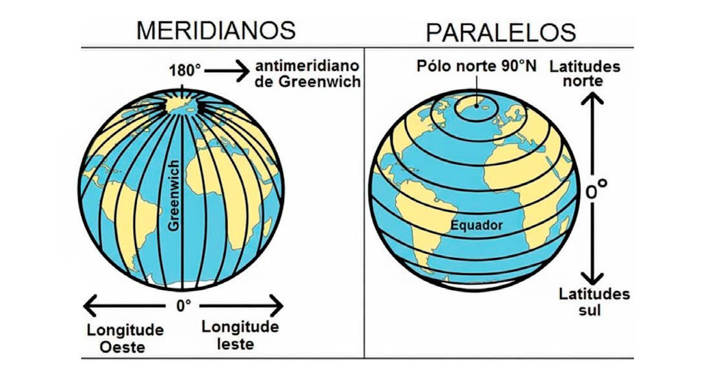
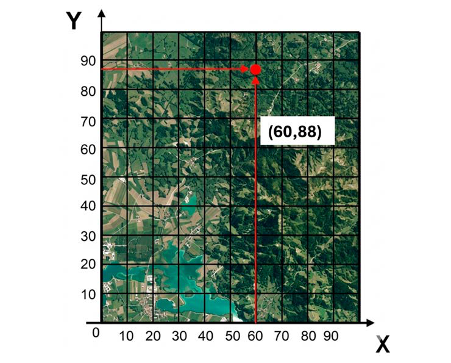

Módulo 3 | Aula 3
Fundamentos da Cartografia
Sistemas de coordenadas
Os sistemas de coordenadas são responsáveis por criar uma informação única de posição geográfica na superfície terrestre, esse posicionamento é de grande importância para a construção de documentos cartográficos. Esse posicionamento está diretamente ligado ao sistema de referência geodésico utilizado, sendo assim a coordenada determinada para um posicionamento pode variar de valor de um sistema para o outro.
Sistemas de coordenadas geográficas
Para que cada ponto da superfície da Terra pudesse ser localizado no mapa, foi criado um sistema de linhas imaginárias chamado Sistema de Coordenadas Geográficas. A coordenada geográfica de um determinado ponto da superfície da Terra é obtida pela interseção de um meridiano e um paralelo.
Os meridianos são linhas imaginárias que cortam a Terra no sentido norte-sul, ligando um polo ao outro. Os paralelos são linhas imaginárias que circulam a Terra no sentido leste-oeste. Paralelos e meridianos são definidos por suas dimensões de latitude e longitude, respectivamente (IBGE, 2026).
As coordenadas geográficas são escritas em unidades de medida angular: grau, minuto e segundo. Inicia-se com latitude de grau zero (0º) no Equador e cada círculo paralelo a ele recebe um valor em graus que cresce para o norte ou sul. Para o norte varia de 0º a 90º e para o sul varia de 0º a -90º. Já a longitude tem como referencial inicial o Meridiano de Greenwich com o valor de zero grau, e cada linha meridiana subsequente cresce em graus para leste de 0º a 180º e para oeste de 0º a -180º.
Figura 3: Meridianos e paralelos.

Fonte: Adaptada de Conceitos básicos de sistemas de informação geográfica e cartografia aplicados à saúde, 2000 por IA Gemini.
Sistemas de coordenadas planas
Coordenadas planas são um sistema bidimensional (x,y) usado para mapear a superfície terrestre em um plano, facilitando medições de distância e áreas. Transformam a superfície curva da Terra em uma superfície plana com um conjunto de linhas que se intersectam formando uma malha.
O sistema funciona através de eixos perpendiculares com uma origem definida (meridiano e paralelos). As localizações são feitas com base na distância de uma origem (0,0) ao longo de dois eixos, um eixo x horizontal representando o leste-oeste e um eixo y vertical representando o norte-sul. As coordenadas planas são convertidas de latitude e longitude em coordenadas x, y usando uma projeção de mapa (FITZ, 2008).
Figura 4: Coordenadas planas

Fonte: Elaborado pelas autoras
Existem diversas maneiras de escrever um par de coordenadas, cada uma adaptada a necessidades específicas, como precisão, facilidade de leitura, compatibilidade com equipamentos ou padrões internacionais.
Tabela 1: Formas de escrita e leitura de coordenadas.
| Forma de escrita | Exemplo | Como interpretar |
|---|---|---|
| Graus Decimais (DD) | -22.9068º, -43.1729º | O primeiro número é latitude. Negativo → Sul Positivo → Norte O segundo é longitude. Negativo → Oeste Positivo → Leste |
| Graus, Minutos e Segundos (DMS) | 22°54'24"S 43°10'22"W | Cada coordenada tem três partes: Graus (°), Minutos ('), Segundos ("). A letra final indica o hemisfério: N / S para latitude; E / W para longitude |
| UTM (Universal Transverse Mercator) | 22J, E 754.134 , N 6.947.459 | Fuso/Zona: 22J (zona 22, faixa J). Coordenada Leste (E): 754.134 m (distância em metros para o leste). Coordenada Norte (N): 6.947.459 m (distância em metros para o norte do Equador). |